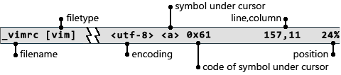

Set color scheme according to the time of day.
~/.gvimrc
let s:hour = strftime('%H')
if s:hour > 7 && s:hour < 18
colorscheme metallic
else
colorscheme darkblue
endif
Advanced status line.

set statusline=%f\ %m%r%y%=<%{&fileencoding}>\ %8{CurCharStatus()}\ %k\ %12(%l,%c%V%)%6P
fun CurCharStatus()
let char = matchstr(getline('.'),'.',col('.')-1)
let char_nr = char2nr(char)
if char_nr == 0
return '<NULL>'
endif
if char_nr < 32
let char = ' '
endif
return printf("<%s> 0x%02x", char, char_nr)
endfun
Create backup of the current file in form 'FILENAME;NUM' (Vax/VMS style).
~/.vimrc
command! Backup call BackupFile()
fun! BackupFile() "{{{
let filename = expand('%')
let backup_list = split(glob(filename.';*'), '\n')
let backup_num = 0
for file in backup_list
let m = matchlist(file, ';\(\d\+\)$')
if !empty(m)
let num = str2nr(m[1])
if num > backup_num
let backup_num = num
endif
endif
endfor
let backup_num = backup_num + 1
let backup_name = filename.';'.backup_num
call rename(filename, backup_name)
silent write
let v:statusmsg = 'Created backup "'.expand(backup_name,':t').'", '.v:statusmsg
echomsg v:statusmsg
endfun "}}}
Web browser interaction.
~/.vimrc
" Lookup selected text in google (context menu modification)
vnoremenu 1.5 PopUp.Lookup\ &Google :call LookupInternetVMode()
if has('win32')
let g:start_browser='silent !start '.$PROGRAMFILES.'/Mozilla Firefox/firefox.exe'
endif
fun! EscapeURI(uri)
let uri = substitute(a:uri, ':', '\%3A', 'g')
let uri = substitute( uri, ' ', '+', 'g')
return uri
endfun
fun! OpenURL(url)
if has('win32')
exe g:start_browser escape(a:url, '%')
else
exe 'silent !xdg-open' escape(a:url, '%') '&'
endif
return 1
endfun
fun! LookupInternet(word, ...)
let postfix = a:0? '&btnI': ''
let url = 'http://google.com/search?q='.EscapeURI(a:word).postfix
return OpenURL(url)
endfun
fun! LookupInternetVMode() range
if a:firstline != a:lastline
return
endif
try
let save_a = @a
silent normal! gv"ay
let text = @a
return LookupInternet(text)
finally
let @a = save_a
endtry
endfun
Ctrl-X W displays highlight info on item under cursor
~/.vimrc
nmap <C-X>w :call SyntaxInfo()<CR>
fun! SyntaxInfo()
let synid=synID(line('.'), col('.'), 0)
let attr=synIDattr(synid, 'name')
let real=synIDattr(synIDtrans(synid), 'name')
echon "\r".attr.' -> '
exe 'echohl' real
echon real
echohl Normal
endfun
Cursor movement keys.
~/.vimrc
" per-screen-line movement
map <Up> gk
map <Down> gj
" in motion-driven commands (y,d) cursor keys should work over text lines,
" not screen.
ounmap <Up>
ounmap <Down>
" scroll window
map <C-Up> <C-Y>
map <C-Down> <C-E>
" put commands does not change cursor position
nnoremap p p`[h
nnoremap P P`[
Home moves cursor either to the first non-blank character or the first column.
~/.vimrc
fun! s:MoveToFirstChar()
let pos = col('.')
normal ^
if pos == col('.')
normal 0
endif
endfun
noremap <silent> <HOME> :call <SID>MoveToFirstChar()<CR>
inoremap <silent> <HOME> <C-\><C-O>:call <SID>MoveToFirstChar()<CR>
Visual mode with Shift-movement keys.
~/.vimrc
nmap <S-Left> vh
nmap <S-Right> vl
nmap <S-Up> Vk
nmap <S-Down> Vj
nmap <S-PageUp> V<PageUp>
nmap <S-PageDown> V<PageDown>
nmap <S-End> v$
nmap <S-Home> v^
imap <S-Left> <C-O>vh
imap <S-Right> <C-O>vl
imap <S-Up> <C-O>Vk
imap <S-Down> <C-O>Vj
imap <S-PageUp> <C-O>V<PageUp>
imap <S-PageDown> <C-O>V<PageDown>
imap <S-End> <C-O>v$
imap <S-Home> <C-O>v^
vmap <S-Left> h
vmap <S-Right> l
vmap <S-Up> k
vmap <S-Down> j
vmap <S-PageUp> <PageUp>
vmap <S-PageDown> <PageDown>
" selection insert
inoremap <S-Insert> <MiddleMouse>
Highlight word under cursor.
~/.vim/plugin/hi-words.vim
fun! s:Setup_Highlight()
if &background == 'dark'
hi PreviewKeyword guibg=#303070
else
hi PreviewKeyword guibg=#c4c0b8
endif
endfun
fun! s:Highlight_Keyword(keyword)
" do not highlight regular keywords
let synid = synIDtrans(synID(line('.'), col('.'), 0))
if synid == hlID('Statement') || synid == hlID('Type') || synid == hlID('Identifier')
match none
return
endif
" character under cursor
let c = getline('.')[col('.')-1]
if c =~ '\w'
exe 'match PreviewKeyword /\<'.escape(a:keyword,'.*[]/\').'\>/'
else
match none
endif
endfun
call s:Setup_Highlight()
augroup HighlightKeyword
au!
au BufAdd * call s:Setup_Highlight()
au WinLeave * match none
au WinEnter,CursorMoved,CursorMovedI * call s:Highlight_Keyword(expand('<cword>'))
augroup END
Copyright © 2011 rnd